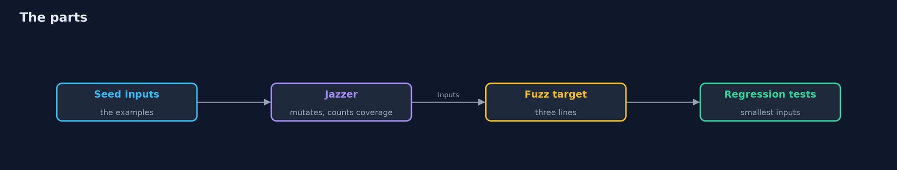
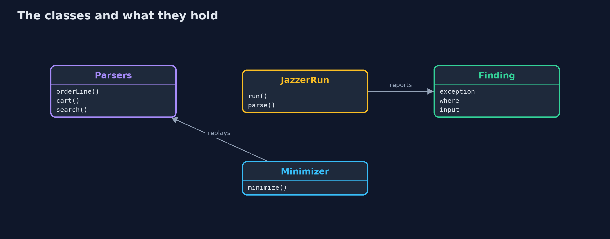
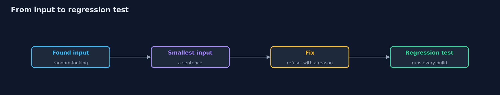
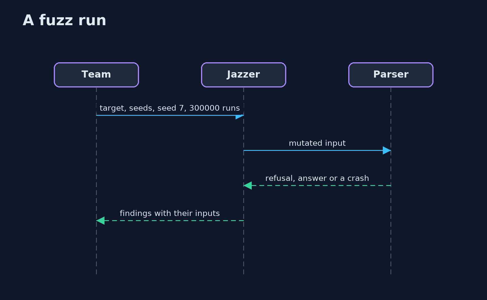

Fuzzing with Jazzer
src/main/java/com/jk/explore/security/jazzerfuzz/
├── CartParser.java The store's cart format, a small subset of JSON: numbers, strings with {@code \"} and {@code \\} escapes, lists and objects
├── Crashes.java Runs a parser on an input and says what, if anything, it did wrong: the exception that is not a refusal, and the first line of the store's code in it
├── Finding.java One distinct problem that Jazzer reported: the kind of exception, where in the store's code it happened, and the file that holds the input
├── JazzerFuzzDemo.java
├── JazzerRun.java The real Jazzer, started as a program of its own on one fuzz target, with a corpus of seed inputs and a fixed random seed, and its report read back
├── Minimizer.java Makes a crashing input as small and plain as it can while it still crashes in the same place: it deletes stretches of characters, from half of the input down to one, then replaces each with a plainer one (A for a letter, 0 for a digit), and repeats until nothing changes
├── Money.java An amount of money in cents
├── OrderLine.java One line of the store's order import file: {@code SKU,quantity,unit price in cents}, such as {@code SHO-1042,2,8990}
├── ParseException.java The one failure a parser is allowed to have: "this input is not valid"
├── Parsers.java The parsers of the store behind one public door each, so that a fuzz target can reach them
├── Value.java A value in the store's small cart format: a number, a string, a list or an object, as in JSON
├── targets/CartCareless.java The fuzz target for the careless cart parser
├── targets/CartFixed.java The fuzz target for the fixed cart parser
├── targets/OrderLineCareless.java The fuzz target for the careless order line parser: anything but a refusal is a finding
├── targets/OrderLineFixed.java The fuzz target for the fixed order line parser: it may refuse, and nothing else may be thrown
├── targets/SearchBoxCareless.java The fuzz target for a search box that hands the customer's words to the regular expression engine as they are
└── targets/SearchBoxFixed.java The fuzz target for the search box that quotes what the customer typed
Jazzer 0.30 fuzzes the store's parsers from a fuzz target of three lines and a handful of seed inputs: it instruments the bytecode itself, finds three crashes in the order line parser and a gift-message bug in the cart parser, saves each input, and its sanitizers report a regular expression injection that is not a crash; but it cannot guess a product code with no seeds, it stops at a default input length, it does not know a business rule, and every saved input is only worth something once it is made smallest and kept as a regression test.
The plain fuzzing project writes a mutation fuzzer and a coverage counter by hand and ends with "coverage-guided tools such as Jazzer add the branch counters to the bytecode by themselves: the -with-jazzer version". This is that version: the real Jazzer 0.30, started as a program by the demo on the same two parsers, with a fixed random seed. It needs no server, no Docker and nothing beyond Gradle (the Jazzer jars include the native part for macOS and Linux); the demo takes about half a minute, and the real-Jazzer tests are tagged integration: ./gradlew integrationTest.
What it shows:
- The example tests pass. Six of six, and a line with only a product code still crashes the parser.
- The real Jazzer. A fuzz target of three lines (Parsers.orderLineCareless(data.consumeRemainingAsAsciiString())), the two example lines as seeds, random seed 7 and 300000 runs: three distinct findings (two ArrayIndexOutOfBoundsException at different lines, and a Money that went negative through an int overflow), each with its input saved.
- Guided by coverage, and by the seeds. With no seeds it reaches 7 coverage points and finds nothing: it cannot guess a product code. The cart parser's gift-message bug is found only when a seed has a note field.
- From crash to fix. Each saved input is made smallest (AAA-0000, AAA-0000,0, AAA-0000,4000,4000000) and replayed as a regression test through the Jazzer JUnit integration, in milliseconds; the fixed parsers run clean under the same fuzzer.
- Beyond crashes. A sanitizer reports Regular Expression Injection in a search box that hands the customer's words to the pattern engine. A cart with a quantity of -5 is no crash, so no report; the nesting crash needs more than the default input length.
Maps to: NIST SSDF PW.8 (test executable code) · OWASP Top 10 (2025) A05 Injection (for the sanitizer) · CWE-20, CWE-248, CWE-674 (uncontrolled recursion), CWE-190 (integer overflow).
The idea in everyday terms
A tireless clerk who takes the three forms you already have, changes a letter here and a number there, hands thousands of variants to the counter, and writes down every one that makes the counter jam. The clerk does not know what the forms mean, only that a jam is a jam.
The scenario
An online store parses order lines and carts that come from outside. The demo gives Jazzer the example inputs of the team and watches what comes back.
Run
./gradlew run
The demo tells the story in 5 acts, each printing exact numbers that the tests check:
| Act | What it shows |
|---|---|
| 1. The example tests pass | Six of six example tests pass, and a line with only a product code still crashes the parser. |
| 2. The real Jazzer | A three-line fuzz target, two seed lines, a fixed random seed and 300000 runs find three distinct bugs. |
| 3. Guided by coverage, and by what you give it | With no seeds it reaches 7 coverage points and finds nothing; with the examples, 19 and three bugs; the gift-message bug needs a seed with a note field. |
| 4. From crash to fix | Each saved input is made smallest, kept as a regression test, and the fixed parsers run clean under the same fuzzer. |
| 5. What fuzzing finds besides crashes, and what it does not | A sanitizer flags a regular expression injection; a quantity of -5 is no crash; the nesting crash needs a longer input than the default. |
Test
./gradlew test
17 tests in DemoRunsTest, FixedParsersFuzzTest, JazzerRealTest, MinimizerTest, ReportTest, SavedInputsTest. Most tests run in milliseconds: the saved inputs as regression tests, the minimizer and the reader of Jazzer's report. The tests that start Jazzer are tagged integration (./gradlew integrationTest).
What the simulation got right, and what it left out
Jazzer runs for real, in a program of its own with a fixed random seed, so the same findings come out each time. The two parsers are the same as in the plain project, without the hand-written coverage counters. Nothing here is mocked.
Technologies and versions
Every version below is pinned in the project's build files and was the latest stable release when the project was built.
| Technology | Version | Used for |
|---|---|---|
| Java | 25 | the language and runtime; a Gradle toolchain finds or downloads the JDK |
| Gradle | 9.8.1 (wrapper) | build and run; nothing to install, the wrapper downloads it |
| com.code-intelligence:jazzer-api | 0.30.0 | library the code uses |
| com.code-intelligence:jazzer | 0.30.0 | library the code uses |
| com.code-intelligence:jazzer-junit | 0.30.0 | library the code uses (tests only) |
| org.junit.jupiter:junit-jupiter | 6.1.3, set by junit-bom | JUnit 5: the tests (tests only) |
| org.junit.platform:junit-platform-launcher | 6.1.3, set by junit-bom | JUnit platform launcher, which Gradle needs to run the tests (tests only) |
| videokit | repository tool (tools/videokit) |
the narrated video and animation: Piper en_US-amy-medium, speed 0.8, longer pauses (the amy-slow voice) |
Learning Material
| Document | What it is for |
|---|---|
| Problem statement | the situation and what the project must show |
| Prerequisites | what you need to know first |
| Fuzzing with Jazzer, explained | the acts in prose |
| Session guide | a one-hour lesson with exercises |
| Animated walkthrough | the acts step by step, narrated |
| Threat model | what is protected, who could harm it, and how, using STRIDE |
| Spec | what this project must be true of |
| Expected output | the golden demo output every test and every port checks against |
The idea in one picture
Seeds in, findings out, and the smallest inputs back into the build.

Where each piece sits
Parsers, their fuzz targets, and the code that runs Jazzer and reads its report.

How the data moves
Each stage makes the crash easier to understand.

Who calls whom, in order

Video
video/fuzzing-with-jazzer-explained.mp4 (with .m4a audio and .srt subtitles) is built by video/build_video.sh. Rendered media is not committed.
What it costs
- Each parser needs a fuzz target, a few lines, and someone to keep them working.
- The seeds decide a lot: a fuzzer with none cannot guess a product code.
- A run is a budget: a fixed number in the build, longer ones at night.
- Findings must be made smallest, reproduced and fixed, or they pile up.
- A fuzzer finds crashes and what its sanitizers know, not wrong decisions.
When this is too much
Code that only moves data between two typed fields has nothing to fuzz. Fuzz what reads bytes or text from outside: parsers, decoders, importers, anything with a format.
Where you have already met this
- A
crash-...file next to a build. @FuzzTestin a JUnit class.- A
corpusfolder in a repository. - A nightly job named
fuzz.
Where this sits
This is the tools version of fuzzing, in the secure-coding module. The input checks it exercises are the subject of input-validation and its Hibernate Validator version.